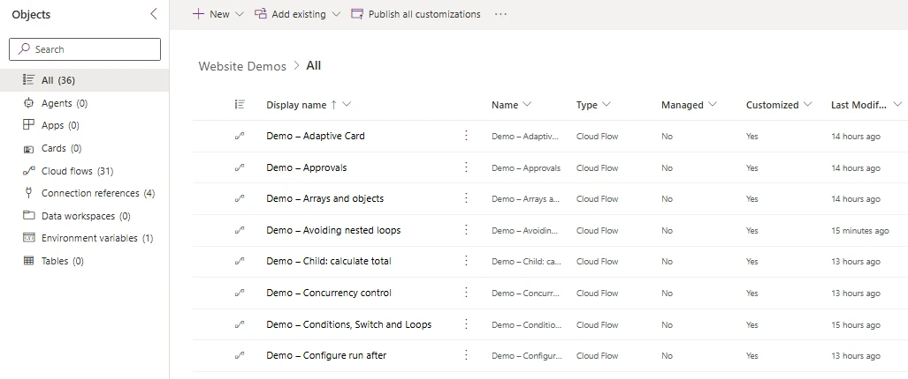

- Power Automate
- Level 6 · ALM and governance · 1 of 7
Solutions and solution-aware flows
A flow built under My flows lives only in the environment where you made it. A solution is a container that holds the flow with everything it depends on, so the whole set moves together.
Why solutions
WhatA container for flows, connection references, environment variables, tables, apps and agents.
WhyWithout one, moving a flow means exporting by hand, fixing connections and hoping nothing was missed.
DemoThe Website Demos solution behind every demo on this site.
The path a solution takes
Dev: build in an unmanaged solution
Export or pipeline (as managed)
Test: check it works
Deploy again
Prod: people use it; nobody edits it here
What a solution holds

| Component | Why it's in the solution |
|---|---|
| Cloud flows | The automation itself |
| Connection references | Point to a connection without hard-coding whose it is |
| Environment variables | Values that differ per environment: site address, email |
| Tables, apps, agents, child flows | Anything else the flow uses |
Unmanaged and managed
| Unmanaged | Managed | |
|---|---|---|
| Where | Development | Test and production |
| Can you edit it? | Yes | No: change in Dev and redeploy |
| Removing it | Removes the container; components stay | Removes the solution and its components |
More on layers and upgrades in Managed and unmanaged solutions (Level 10).
Publisher and prefix
Where the prefix comes from
Create a publisher with prefix
contosoCreate the solution with that publisher
Every new component gets it:
contoso_SiteUrl, contoso_sharepointNew to this? Start from the basics optional
Solution-aware flow: created in, or added to, a solution. Only these can move with it.
ALM: the way changes move from idea to production safely and repeatably.
Build it step by step optional
- Solutions → New solution; create your own publisher and prefix.
- Open it → New → Automation → Cloud flow (solution-aware from the start).
- Bring older flows in with Add existing → Automation → Cloud flow.
- Export as managed for Test and Prod, or deploy with a pipeline.
Common mistakes
- Production flows under My flows.
- Editing directly in production.
- The default publisher's random prefix.